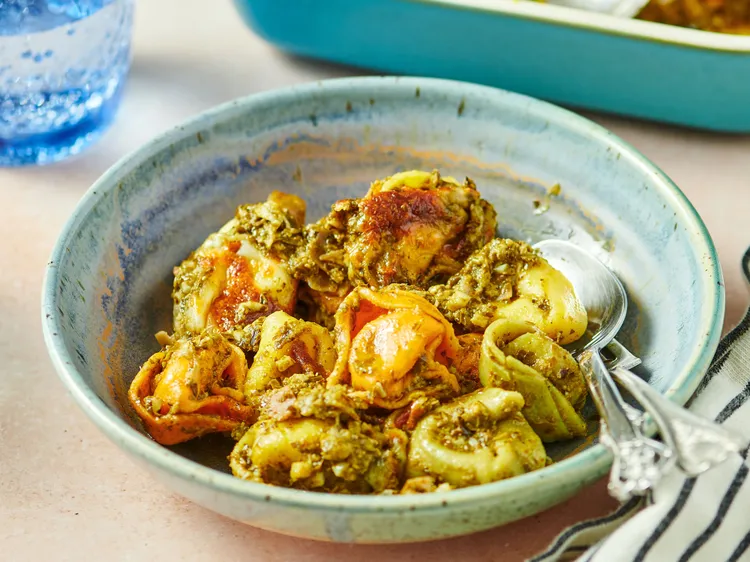

Pesto Tortellini

Ingredients
- Tri-color cheese tortellini
- Pre-prepared Pesto
- Prosciutto
- Mozzarella cheese
Steps
- Gather all ingredients. Preheat the oven to 350 degrees F (180 degrees C).
- Fill a large pot with lightly salted water and bring to a rolling boil; stir in tortellini and return to a boil.
Cook uncovered, stirring occasionally, until tortellini float to the top and the filling is hot, about 3 minutes.
Drain.
- Stir tortellini, prosciutto, pesto, and 1/2 cup mozzarella together in a large bowl.
- Pour into a baking dish. Sprinkle remaining mozzarella over the top.
- Bake in the preheated oven until cheese is melted and golden, about 10 minutes. Serve warm.
Home